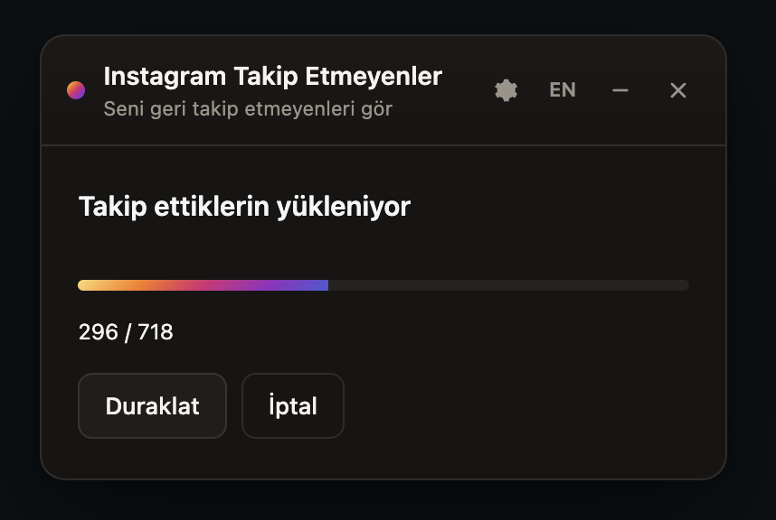

See who does not follow you backSeni geri takip etmeyenleri gör
It scans the accounts you follow and lists the ones that do not follow back. Your data never leaves the browser.
Takip ettiğin hesapları tarar, geri takip etmeyenleri listeler. Veri tarayıcından çıkmaz.
SupportDestek
This project is a hobby and it is free. If you find it useful, you can help keep it going.
Bu proje hobi olarak sürdürülüyor ve ücretsiz. Faydalı bulduysan geliştirilmesine destek olabilirsin.
For company sponsorship, write to me directly. I put a thank-you on this page and in the README.
Kurumsal sponsorluk için doğrudan yazabilirsin. Sayfada ve README'de teşekkür yerleştiririm.
Sponsor this and your name, handle, and amount show up here. The page was viewed 48,640 times in the last 30 days.
Sponsor olursan adın, hesabın ve desteğin burada görünür. Bu sayfa son 30 günde 48.640 kez görüntülendi.
How to use itNasıl kullanılır
Open DevTools on the Instagram tab you already have open, then paste the snippet above into the console.
Tarayıcıda açtığınız Instagram sekmesinde DevTools konsolunu açın ve yukarıdaki kodu yapıştırın.
Instagram may rate-limit you. Do not push the unfollow speed higher than it needs to be.
Instagram rate-limit uygulayabilir. Takip bırakma hızını gereksiz yere arttırmayın.
-
Sign in to InstagramInstagram'a giriş yapın
First, sign in to your account on instagram.com.
Önce instagram.com üzerinde hesabınızla giriş yapın.
-
Open the consoleKonsolu açın
Windows/Linux: Ctrl+Shift+J · macOS: ⌘+⌥+I.
Windows/Linux: Ctrl+Shift+J · macOS: ⌘+⌥+I.
-
Paste the codeKodu yapıştırın
Press Copy code, then paste it into the console. If Chrome blocks the paste, type allow pasting first.
Kodu kopyala butonuna basın, konsola yapıştırın. Chrome engellerse önce allow pasting yazın.
-
Press "Start scan""Taramayı başlat"a basın
Start the scan once the panel opens. You can then unfollow your selections slowly and under control.
Panel açılınca taramayı başlatın. Seçtiklerinizi yavaş ve kontrollü şekilde takipten çıkarabilirsiniz.

ChangelogDeğişiklikler
Every time the code is updated, you can see here what changed.
Kod her güncellendiğinde neyin değiştiğini buradan görebilirsin.
SecurityGüvenlik
Below are the security reports, or you can read the code yourself.
Aşağıda güvenlikle ilgili raporları görebilir veya kodu kendiniz inceleyebilirsiniz.
File signatureDosya imzası
SHA-256
VirusTotal
Static analysisStatik analiz
TrafficTrafik
The site is open source and run as a hobby. Here are the raw numbers for the last 30 days.
Site açık kaynak ve hobi olarak sürdürülüyor. İşte son 30 günün ham rakamları.
SourceKaynak
This is the new version; the original usage idea comes from davidarroyo1234/InstagramUnfollowers.
Yeni sürüm; eski kullanım fikri davidarroyo1234/InstagramUnfollowers projesinden geliyor.